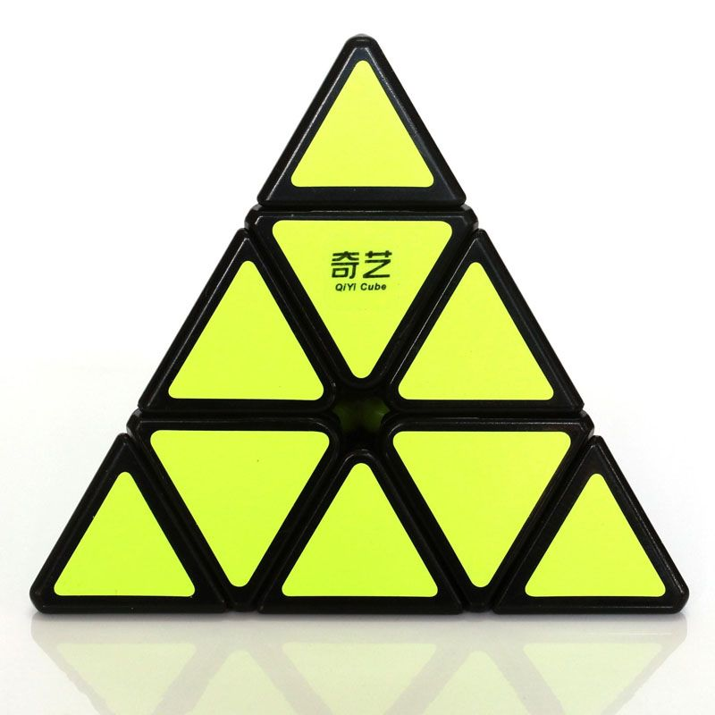

Welcome to Rubiko-kubas
Kaip surinkti rubiko kubą 3x3, surinkimo diagramas
2020.10.29 03:53Naudingi patarimai, atsakymai į klausimus Pagrindinis Auto Vaikai Naminiai gyvūnai Hobis Karjera Kinas Knygos Kita Kompiuteriai Kosmetika Grožis Mados Etnoscience Psichologija Įvairūs Receptai Remontas Įranga Sveikata Įvairūs 0 1 2 3 4 5
Kaip surinkti rubiko kubą 3x3, surinkimo diagramas
Tikriausiai visi bent kartą bandė surinkti kubąRubik 3x3 - paprasta išvaizda, bet iš tikrųjų sudėtinga galvosūkis. Žemės sovietai pasakyti jai nustatyti su specialių sistemų pagalba ir kurti algoritmus, kurie bus suprantama net pradedantiesiems.
Rubiko kubas (kiti pavadinimai yra Rubiko kubas,Magic Cube) yra žinomas mechaninis galvosūkis. 1974 m. Jis buvo išrastas Vengrijos skulptoriaus ir architektūros mokytojo Erno Rubiko, o 1975 m. Jis patentuota savo išradimui.
Klasikinį įspūdį sudaro 26 mažesnispalvoti kubeliai (dydis 3x3x3). Jie gali pasukti aplink ašis, kurios yra nematomos iš išorės. Uždavinys - surinkti žaislą , kad kiekvienas jo veidas sudarytų iš tos pačios spalvos kvadratų.
Rubiko kubas: surinkti pirmąjį galvosūkio diržą
Rubiko 3x3 kubo surinkimas pradedantiesiems atrodo sudėtingas, bet jį lengva įsisavinti.
Pirmiausia norime apibrėžti terminiją irduok kiekvienam kubui vardą. Centrinėje kuboje (centre) paveiksle pavaizduotas numeris 1, šoninis kubas (šoninis) - numeris 2, kampo kubas (kampas) - numeris trys.
Svarbu! Pagrindinė surinkimo taisyklė yra ta, kad priekinė pusė (priekinė) neturėtų pasikeisti!
Pirmasis diržas stengiasi surinkti save - pirmoji pusė vyksta taip, kaip jums patinka, galite parodyti savo vaizduotę. Po to pirmasis diržas surenkamas keičiantis pirmosios pusės kubeliais.
Štai keletas patarimų, kaip rinkti pirmąją partiją:
Centriniai kvadratai visada yra vienodi vienas kito atžvilgiu.
Balta pusė fiziškai negali egzistuoti geltonai, žalia su mėlyna ir raudona su oranžine spalva.
Pirmiausia įsitikinkite, kad pirmoji pusė turi teisingą kryžių iš šonų, tada surinkite kampus.
Rubiko kubas: formulės antrajam galvos diržui
Norėdami sukurti antrą diržą, gali prireikti dviejų formulių.
Rubiko kubo asamblėjos schema - Formula 1 Rubiko kubo asamblėjos schema - Formula 2
Šias formules sunku suprasti. Pavyzdžiui, pasukant 1 formulę 1 sukasi viršutinė pusė pagal laikrodžio rodyklę. Ir pasukite 7 formulę 1 - pasukite priekinę pusę prieš laikrodžio rodyklę. Visada pasukama 90 ° kampu.
Antrojo Rubiko kubo 3x3 juostos surinkimo schemojevisiškai sumontuota pusė su pirmuoju diržu - nematoma dalis į kairę. Nepamirškite: centrinis kubas visada yra vienodos spalvos, pusė yra dvi, o kampas yra trys. Priekinė pusė - 4.
Pirmiausia pakeiskite šoninę 2 į 0-1 kubą. 2 ir 4 plokščių spalva turi sutapti. Šoninės sienelės 2 nematomos spalvos, sumontuotos pagal pirmąją formulę, yra 5.
Kvadratai 2 ir 3 yra ant trečiosios juostosne surinkti. Tai reiškia, kad jūs turite rasti pusėje priešais jau sumontuotas šonines plokštes be spalvos 6 ir pasukdami 3-iąjį diržą, matomą 6 pusėje priešais atitinkamą pirmojo diržo spalvą.
Jei kvadrato 3 spalva yra tokia pati kaip kvadrato 5 spalva, surinkti pagal formulę 2: vietoje 0-1 uždėkite šoną 3.
Rubiko kubas: paskutinio, trečiojo galvosūkio diržo surinkimas
Norėdami pastatyti trečią diržą (paskutinę pusę), jums reikia trys formulės.
Kaip pridėti galvosūkį: Formulė 3 Kaip pridėti įspūdį: Formulė 4 Kaip surinkti galvosūkį: Formulė 5
Pirmiausia turite surinkti teisingą kryžiųpaskutinė pusė - taigi šoninės sienos užims tinkamą padėtį. Kubas turi būti orientuotas į pusę, nurodytą mėlyname paveikslėlyje. Šioje diagramoje priekinė pusė yra pažymėta mėlyna, visiškai sumontuota - apatinė nematoma pusė. Norėdami surinkti teisingą kryžių, keletą kartų pakartokite formulę. Pakartokite kryptį, kai tolimas kubas yra teisingai išdėstytas, ir artimiausio kubo nėra.
Po to tikkampiniai kvadratai. Jei jie stovi savo vietose, bet nėra tinkamai orientuoti - nesilaikykite šios formulės. Mėlynas kubas paveikslėlyje yra jo vietoje. Jei neturite, priekinė pusė gali būti bet kokia. Po 2-3 pakartojimų formulės 4, kampai turėtų nukristi į vietą.
Norėdami teisingai nukreipti kampus, naudokiteFormulė 5. Kad spalvotas mėlynas kampas gerai atsistotų, jį reikia keisti keletą kartų. Svarbiausia yra ne pakeisti priekinę pusę, kol kubas bus visiškai surinktas - net jei jums atrodo, kad niekas išeina. Jei pirmas kartas neteisingai pakyla, vėl vykdykite formulę. Norėdami pakeisti kitą kampą, pirmasis žingsnis bus toks:
Video Tutorial : kaip surinkti Rubik s Cube 3x3 pradedantiesiems
Geriau suprasti pateiktas schemas irGrafiškai pristatyti Rubiko kubo surinkimo procesą, paimkite kubą rankoje ir žiūrėkite video pamoką. Pabandykite pakartoti tai, ką sužinojote. Esame įsitikinę, kad dabar jūs galite lengvai surinkti šį įspūdį!
Jūs įsisavinę diagramą, kaip teisingai ir greitaisurinkti šį žymiausių galvosūkį. Žinoma, yra daug daugiau formules jos surinkimui į 3x3 formatu, mes turime aprašyti tik keli, bet su šiek tiek praktikos, galėsite greitai suprasti ir be surinkimo brėžinyje.
